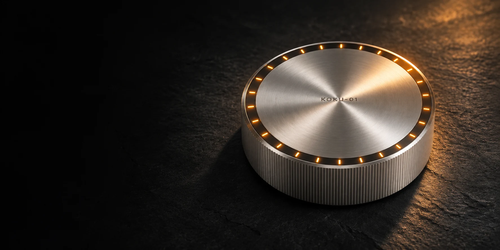
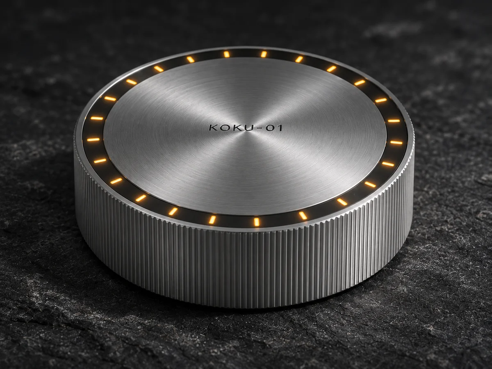
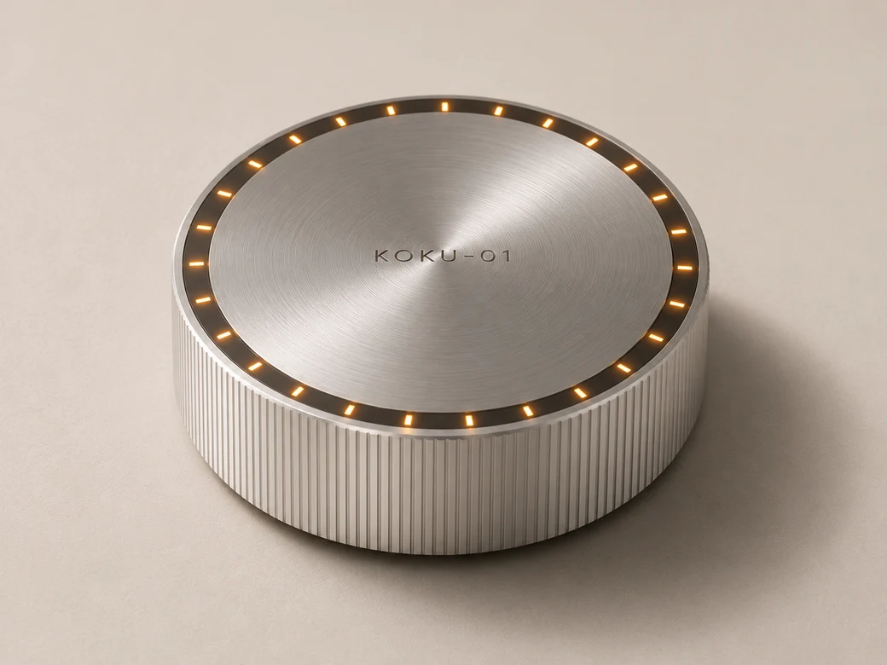
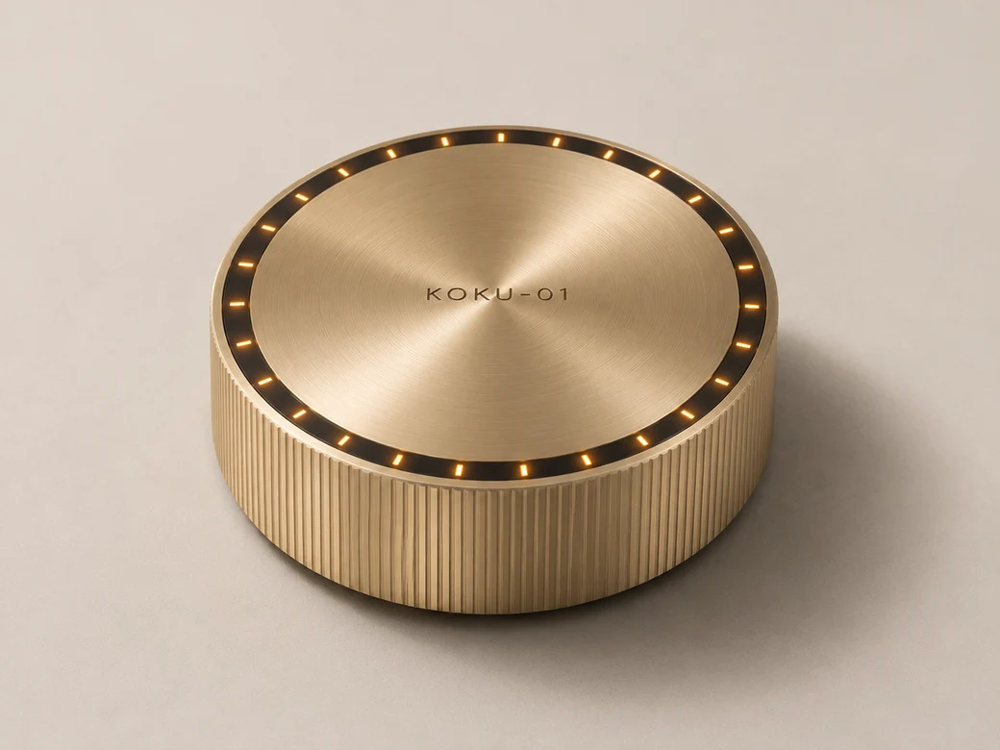

- 24灯LEDリング
- 36ステップ磁気ラチェット
- 最大30日USB-C充電

回す。押す。
集中する。
目の前のことに集中する時間をつくる、無画面のタイマーです。
- TURN
- 回して、時間を決める。
36ステップの磁気ラチェットが、クリックを指先に伝えます。
- PRESS
- 押して、集中を始める。
天面を押すとスタート。外周の24灯が、残り時間を示します。
内蔵スピーカーで、無音・雨音・ホワイトノイズの3つのモードを選べます。
タイマーを体験
ダイヤルを回し、天面を押してスタート。
ドラッグで回す 天面を押す。矢印キーで時間を調整できます。
製品仕様
- 製品
- KOKU-01
- サイズ・重量
- 直径78 mm × 高さ26 mm / 210 g
- 筐体
- CNC削り出しアルミニウム
- 操作・表示
- 36ステップ磁気ラチェット、天面プッシュ、24灯LEDリング
- 充電・稼働
- USB-C充電、最大30日稼働
- 環境音
- 内蔵スピーカー（無音・雨音・ホワイトノイズ）
- スマホアプリ連携
- 非対応
- 保証
- 1年
先行予約
色・プラン・オプションで価格を試算。

